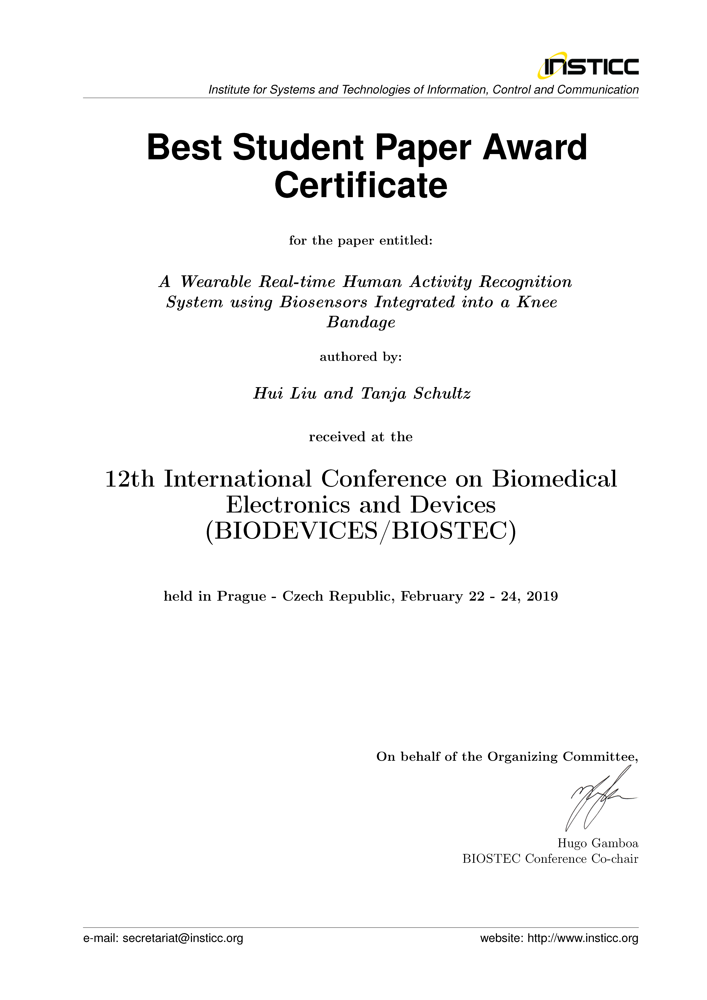
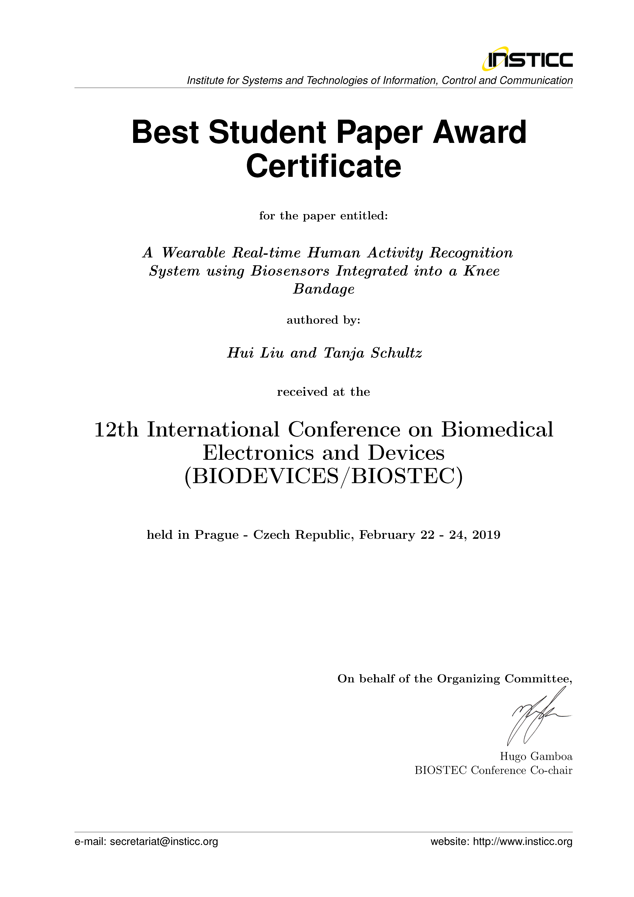
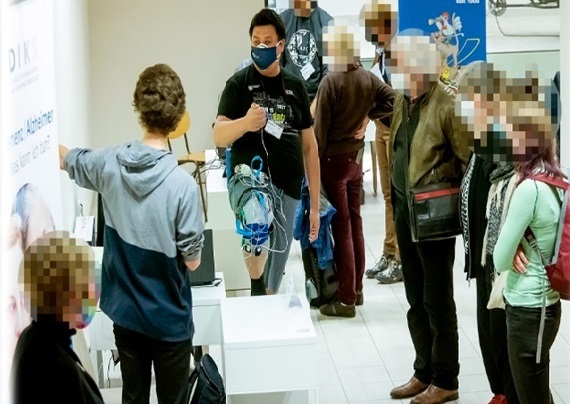

Links
|
|
Homepage @Universität Bremen |
| 0000-0002-6850-9570 | |
| GyLOsRwAAAAJ | |
| Hui-Liu-149 | |
| 57196004640 | |
| 2146672447 | |
| ACZ-9903-2022 | |
|
Your contribution is welcome: Sensors for Human Activity Recognition (Vol. II) |
|
Research Keywords
|
BME, (W)BSN, (W)BAN, Wearables, IMU, (s/f)EMG, EGM (electrogoniometers), AI, ML, HMM, UbiComp, HAR, HBR, AUR (action unit recognition), muscle synergy, BDM (big data mining), IR (information retrieval), OD (outlier detection), SSM (self-similarity matrix), automatic segmentation and annotation, Open-source time-series analysis libraries: feature extraction and subsequence search, Open-source multimodal human activity dataset, activity modeling: motion units (MU), HCI, CHI, RTS (real-time system), Wi-Fi antennas, metaverse, VR, AR, MR, XR, MIR (music information retrieval), folk music, and singing assistance, among others. | |
|
(Alternative source, downloadable: ) Developed the first intelligent knee bandage recognizing human activities in real-time to assist rehabilitation Best Paper Award (Student Author) of  12th International Joint Conference on Biomedical Engineering Systems and Technologies 
12th International Joint Conference on Biomedical Engineering Systems and Technologies  | |
Publications
|
|
|
Proceedings of the 17th International Joint Conference on Biomedical Engineering Systems and Technologies – (Volume 1). Guarino, M. P., Hotta, K., Yousef, M., Liu, H., Saggio, G., Fred, A., and Gamboa, H. (2024). INSTICC. |
|
Sensors for Human Activity Recognition. Liu, H., Gamboa, H., and Schultz, T. (2023). MDPI. |
|
Biosignal processing and activity modeling for multimodal human activity recognition. Liu, H. (2021). PhD thesis, University of Bremen. |
|
High-Level Features for Human Activity Recognition and Modeling. Hartmann, Y., Liu, H., and Schultz, T. (2023). Biomedical Engineering Systems and Technologies. Springer Nature Switzerland. |
|
Sensor-Based Human Activity and Behavior Research: Where Advanced Sensing and Recognition Technologies Meet. Liu, H.*, Gamboa, H., and Schultz, T. (2023). Sensors, 23(1):125. MDPI. |
|
Hidden Markov Model and Its Application in Human Activity Recognition and Fall Detection: A Review. Xue, T., and Liu, H. (2022). Communications, Signal Processing, and Systems. Springer, Singapore. |
|
Bremen Big Data Challenge 2017: Predicting University Cafeteria Load. Weiner, J., Diener, L., Stelter, S., Externest, E., Kühl, S., Herff, C., Putze, F., Schulze, T., Salous, M., Liu, H., Küster, D., and Schultz, T. (2017). KI 2017: Advances in Artificial Intelligence. Springer, Cham. |
|
|
|
MS2OD: Outlier Detection Using Minimum Spanning Tree and Medoid Selection. Li, J., Li, JW, Wang, C., Verbeek F. J.*, Schultz, T., and Liu, H.* (2024). Machine Learning: Science and Technology, 5:015025. IOPscience. |
|
Taxonomy and Real-Time Classification of Artifacts during Biosignal Acquisition: A Starter Study and Dataset of ECG. Liu, H.*, Zhang, S., Gamboa, H., Xue, T., Zhou, C., and Schultz, T. (2024). IEEE Sensors Journal, 24(6): 9162-9171. |
|
Robust Human Locomotion and Localization Activity Recognition over Multisensory. Khan, D., Alonazi, M., Abdelhaq, M.*, Mudawi, N. A., Algarni, A., Jalal, A.*, Liu, H.* (2024). Frontiers in Physiology, 15:1344887. |
|
Understanding Naturalistic Facial Expressions with Deep Learning and Multimodal Large Language Models. Bian, Y., Küster, D., Liu H., and Krumhuber, E. G.* (2024). Sensors, 24(1):126. MDPI. |
|
Muscle Synergies in Joystick Manipulation. Cai, L., Yan, S., Ouyang C., Zhang, T., Zhu, J., Chen, L., Ma, X.*, and Liu, H.* (2023). Frontiers in Physiology, 14:1282295. |
|
Outlier Detection Using Iterative Adaptive Mini-Minimum Spanning Tree Generation with Applications on Medical Data. Li, J., Li, JW, Wang, C, Verbeek, F. J.*, Schultz T., and Liu H.* (2023). Frontiers in Physiology, 14:1233341. |
|
Efficient Wi-Fi-Based Human Activity Recognition Using Adaptive Antenna Elimination. Jannat, M.K.A., Islam, M.S., Yang, S-H*, and Liu, H.* (2023). IEEE Access, 11:105440-105454. |
|
Hybrid Modeling on Reconstitution of Continuous Arterial Blood Pressure Using Finger Photoplethysmography. Shi, W., Zhou, C., Zhang, Y., Li, K., Ren, X., Liu, H.*, and Ye, X.* (2023). Biomedical Signal Processing and Control, 85:104972. Elsevier. |
|
Feature-Based Information Retrieval of Multimodal Biosignals with a Self-Similarity Matrix: Focus on Automatic Segmentation. Rodrigues, J.*., Liu, H.* (co-first), Folgado, D., Belo, D., Schultz, T., and Gamboa, H.* (2022). Biosensors, 12(12):1182. MDPI. |
|
Bell Shape Embodying Zhongyong: The Pitch Histogram of Traditional Chinese Anhemitonic Pentatonic Folk Songs. Liu, H.*, Jiang, K., Gamboa, H., Xue, T., and Schultz, T. (2022). Applied Sciences, 12(16):8343. MDPI. |
|
TSSEARCH: Time Series Subsequence Search Library. Folgado, D. Barandas, M., Antunes, M., Nunes, M. L., Liu, H., Hartmann, Y., Schultz, T., and Gamboa, H. (2022). SoftwareX, 18:101049. Elsevier. |
|
CSL-SHARE: A Multimodal Wearable Sensor-Based Human Activity Dataset. Liu, H.*, Hartmann, Y., and Schultz, T. (2021). Frontiers in Computer Science, 3:759136. |
|
TSFEL: Time Series Feature Extraction Library. Barandas, M., Folgado, D., Fernandes, L., Santos, S., Abreu, M., Bota, P., Liu, H., Schultz, T., and Gamboa, H. (2020). SoftwareX, 11:100456. Elsevier. |
|
|
|
Comfort Assessment Method of EEG-Based Exoskeleton Walking-Assistive Device. Zhou, C., Wang, H., Li, K., Liu, H., and Ye, X. (2024). In BIOSTEC 2024 - Proceedings of the 17th International Joint Conference on Biomedical Engineering Systems and Technologies - BIOSIGNALS, pages 675-682. INSTICC, SciTePress. |
|
Can Electromyography Alone Reveal Facial Action Units? A Pilot EMG-Based Action Unit Recognition Study with Real-Time Validation. Veldanda, A., Liu, H., Koschke, R., Schultz, T., and Küster, D. (2024). In BIOSTEC 2024 - Proceedings of the 17th International Joint Conference on Biomedical Engineering Systems and Technologies - BIODEVICES, pages 142–151. INSTICC, SciTePress. |
|
Really Can't Hold on Anymore? Physiological Indicators Versus Self-Reported Motivation Drop During Jogging. Zhang, S., Kolensnikov, S., Rennspieß, T., Porzel, R., Schultz, T., and Liu, H. (2024). In BIOSTEC 2024 - Proceedings of the 17th International Joint Conference on Biomedical Engineering Systems and Technologies - BIOSIGNALS, pages 821-831. INSTICC, SciTePress. |
|
Associating Endpoint Accuracy and Similarity of Muscle Synergies. Cai, L., Yan, S., Ouyang, C., Zhang, T., Zhu, J., Chen, L., and Liu, H. (2024). In BIOSTEC 2024 - Proceedings of the 17th International Joint Conference on Biomedical Engineering Systems and Technologies - BIOSIGNALS, pages 683-694. INSTICC, SciTePress. |
|
Integrated Driver Pose Estimation for Autonomous Driving. Cao, X., Hu, W., and Liu, H. (2024). In BIOSTEC 2024 - Proceedings of the 17th International Joint Conference on Biomedical Engineering Systems and Technologies - BIOSIGNALS, pages 695-702. INSTICC, SciTePress. |
|
On a Real Real-Time Wearable Human Activity Recognition System. Liu, H., Xue, T., and Schultz, T. (2023). In BIOSTEC 2023 - Proceedings of the 16th International Joint Conference on Biomedical Engineering Systems and Technologies - WHC, pages 711-720. INSTICC, SciTePress. |
|
Merged Pitch Histogram and Pitch-Duration Histogram. Liu, H., Xue, T., and Schultz, T. (2022). In SIGMAP 2022 - Proceedings of the 19th International Conference on Signal Processing and Multimedia Applications, pages 32-39. INSTICC, SciTePress. |
|
Interactive and Interpretable Online Human Activity Recognition. Hartmann, Y., Liu, H., and Schultz, T. (2022). In PERCOM 2022 - 20th IEEE International Conference on Pervasive Computing and Communications Workshops and other Affiliated Events, pages 109–111. IEEE. |
|
A Practical Wearable Sensor-Based Human Activity Recognition Research Pipeline. Liu, H., Hartmann, Y., and Schultz, T. (2022). In BIOSTEC 2022 - Proceedings of the 15th International Joint Conference on Biomedical Engineering Systems and Technologies - Volume 5: HEALTHINF, pages 851-860. INSTICC, SciTePress. |
|
How Long Are Various Types of Daily Activities? Statistical Analysis of a Multimodal Wearable Sensor-Based Human Activity Dataset. Liu, H., and Schultz, T. (2022). In BIOSTEC 2022 - Proceedings of the 15th International Joint Conference on Biomedical Engineering Systems and Technologies - Volume 5: HEALTHINF, pages 684-692. INSTICC, SciTePress. |
|
Interpretable High-Level Features for Human Activity Recognition. Hartmann, Y., Liu, H., Lahrberg, S., and Schultz, T. (2022). In BIOSTEC 2022 - Proceedings of the 15th International Joint Conference on Biomedical Engineering Systems and Technologies - Volume 4: BIOSIGNALS, pages 40-49. INSTICC, SciTePress. |
|
Motion Units: Generalized Sequence Modeling of Human Activities for Sensor-Based Activity Recognition. Liu, H., Hartmann, Y., and Schultz, T. (2021). In EUSIPCO 2021 - 29th European Signal Processing Conference. IEEE. |
|
Feature Space Reduction for Human Activity Recognition Based on Multi-Channel Biosignals. Hartmann, Y., Liu, H., and Schultz, T. (2021). In BIOSTEC 2021 - Proceedings of the 14th International Joint Conference on Biomedical Engineering Systems and Technologies - Volume 4: BIOSIGNALS, pages 215-222. INSTICC, SciTePress. |
|
Feature Space Reduction for Multimodal Human Activity Recognition. Hartmann, Y., Liu, H., and Schultz, T. (2020). In BIOSTEC 2020 - Proceedings of the 13th International Joint Conference on Biomedical Engineering Systems and Technologies - Volume 4: BIOSIGNALS, pages 135–140. INSTICC, SciTePress. |
|
A Wearable Real-Time Human Activity Recognition System using Biosensors Integrated into a Knee Bandage. Liu, H., and Schultz, T. (2019). In BIOSTEC 2019 - Proceedings of the 12th International Joint Conference on Biomedical Engineering Systems and Technologies - Volume 1: BIODEVICES, pages 47–55. INSTICC, SciTePress. |
|
ASK: A Framework for Data Acquisition and Activity Recognition. Liu, H., and Schultz, T. (2018). In BIOSTEC 2018 - Proceedings of the 11th International Joint Conference on Biomedical Engineering Systems and Technologies - Volume 3: BIOSIGNALS, pages 262–268. INSTICC, SciTePress.
|
|
Capacity of Cooperative Ad Hoc Networks with Heterogeneous Traffic Patterns. Liu, H., and Wang, X. (2011). In ICC 2011 - IEEE International Conference on Communications, pages 1–5. IEEE. |
Academic Contributions and Activities
| Editorial Board |
● Engineering Research Express ● Frontiers in Big Data ● Frontiers in Artificial Intelligence |
| Guest Editor |
● |
| Editor |
● Frontiers in Behavioral Neuroscience |
| Conference Program Chair |
● BIOSIGNALS 2024 - 17th International Conference on Bio-Inspired Systems and Signal Processing (in BIOSTEC 2024), Rome, Itaty |
| Conference Area Chair |
● BIOSIGNALS 2024 - 33rd International Conference on Artificial Neural Networks, Lugano, Switzerland ● CEII 2024 - 7th Asia Conference on Cognitive Engineering and Intelligent Interaction, Singapore |
| Conference Session Chair |
● HEALTHINF 2022 - 15th International Conference on Health Informatics, Vienna, Austria ● SIGMAP 2022 - 19th International Conference on Signal Processing and Multimedia Applications, Lisbon, Portugal ● BIOSTEC 2023 - 16th International Joint Conference on Biomedical Engineering Systems and Technologies, Lisbon, Portugal |
| Reviewer |
● For 40 international journals, including Nat. Commun., Biomed. Signal Process. Control, Remote Sens., Front. Physiol., Front Bioeng. Biotechnol., Physiol. Meas., Phys. Scr., ISPRS Int. J. Geo-Inf., Biomimetics, and Biosensors ● For various conferences, including IEEE BSN, BHI; ACM ICMI, ISWC, AUTOMOTIVEUI; ITP ● IOP Trusted Reviewer in recognition of an exceptionally high level of peer review competency ● 2023 Outstanding Reviewer Award of Sensors |
 Arthrokinemat (2016 — 2019) |
● Project Facilitator and Researcher ● Federal Ministry for Economic Affairs and Climate Action, Germany (BMWi) ● Development of a learning, adaptive, sensor-based measurement system to prevent arthrosis activation when the knee joint is overloaded |
 NF-BWB (2023 — 2025) |
● Project Facilitator and Researcher ● Bremen Securities Exchange Foundation (BWB) ● Promoting young talents: big data and AI popularization and competition in high schools |
 IntEL4CoRo (2021 — 2025) |
● Project Facilitator and Researcher ● Federal Ministry of Education and Research, Germany (BMBF) ● Interactive Learning Environment for Cognitive Robotics |
 ETAP (2022 — 2025) |
● Project plan participant ● Federal Ministry of Health, Germany (BMG) ● Evaluation of semi-automated care processes in long-term care using AI-based activity monitoring |
Young European Research Universities Network |
● YERUN Research Mobility Awards (YRMA) |
Universidade Nova de Lisboa Lisbon, Portugal |
● |
 Biosignals Notebooks |
● Online Sensor-based AI Tutorial & Code Sharing |
Verein der CDHAW-Absolventen und Mitglieder der Tongji-Universität Düsseldorf, Germany 2018 |
● Invited Speaker: Academics and Art |
 Karlsruher Institut für Technologie KD2school Adaptive Systems Talks Karlsruhe, Germany 2022 |
● Invited Workshop Speaker |
Prague, Czech 2019 |
● Tutorial: From Offline towards Real-Time |
 4th Bremen Big Data Challenge BBDC 2019 |
● Big data acquisition, processing, and provision (individually) ● More than 60 teams from north German universities participated in the final round |
Industry-Oriented Scientific Activities
 Bremen, Germany 2019 |
● Demonstration of real-time human activity recognition ● Demonstration of MR game platform for rehabilitation assistance ● @ |
|
Bremen, Germany 2021 |
● Demonstration of intelligent knee bandage  ● @ |
|
 PLUX Wireless Biosignals S.A. |
● Scientific Consultant | |
 CAMPUSiDEEN 2022 Business Idea Competition |
● Public Choice Award |
Professional Preparation
|
2001 — 2004 Shixi High School |
● Senior High School ● 1st Prize of the National Olympiad in Informatics in Provinces (NOIP'94) [Certificate No. I030473] ● 1st Prize of Shanghai High School Programming Competition (CASIO Cup) |
 2004 — 2007 School of Electronic Information and Electrical Engineering Shanghai Jiao Tong University Major: Information Engineering |
● Bachelor ● Scholarship of Shanghai Jiao Tong University (three years) |
 2007 — 2009 Faculty IV: Electrical Engineering and Computer Science Technische Universität Berlin Major: Communication Systems Major: Quality and Usability Supplementary: Computer Vision |
● Diplom-Ingenieur ● Average course score：1.0 ● Student research assistant @ Fraunhofer Institute for Telecommunication, Heinrich Hertz Institute |
|
2009 — 2011 School of Electronic Information and Electrical Engineering Shanghai Jiao Tong University Major: Communication and Information System |

 ● Master of Science ● GPA：3.16/3.3 ● Ranking：1/102 ● First-class National Fellowship |
2012 — 2013 Technische Universität Berlin |
● Research Assistant ● The President's Scholarship of Technische Universität Berlin |
 2014 — 2016 In Industry |
● Software Engineer ● Responsible for integrated development projects |
|
2016 — 2021 Cognitive Systems Lab (CSL), Faculty 3: Mathematics and Computer Science, Universität Bremen |
● In charge of the BMWi project Arthrokinemat ● Developed the first intelligent knee bandage recognizing human activities in real-time to assist rehabilitation ● Best Paper Award (student author) ● Established extensive and close research cooperation with Institute of Sports and Sports Science  , among others , among others● Obtained a PhD of Engineering in 2021 |
|
From 2021 Universität Bremen |
● Postdoctoral Researcher |
Teaching Experience
|
From 2022 Hot Topics in Sensors and Human Activity Research (EN/DE) |
● Course provider ● Seminar instructor |
|
From 2022 Selected Topics of Cognitive Systems (DE) |
● Cooperative teaching ● Seminar instructor |
|
From 2017 Biosignals and User Interfaces (DE) |
● Organization of E-teaching; part of teaching tasks ● Exercise courses; online and offline Q&A ● Exam proposition; oral exam committees ● Virtual teaching activities in the pandemic |
|
2020 — 2021 Machine Learning Basics (EN) |
● Cooperative teaching ● Responsible for clustering analysis and clustering algorithm ● Online lecture video preparation in the pandemic |
|
2020 — 2021 Bachelor Project: RobARinth (DE) |
● Instructing project practice, including biodevice technology |
|
2016 — 2018 Software-Projekt II (DE) |
● Teaching and advising software design ● Instructing group practice ● Accompanying user conferences to formulate requirements ● Guiding programming and reviewing development |
|
2010 — 2011 Basic Theory of Circuits (EN/DE) |
● Teaching Assistant |
| Selected Supervised Master and Bachelor Theses: |
| My Supervised Students and Research Assitants |
 Hui's research group (partially) 2023 |